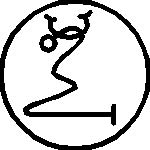

Ellinci İsim NINNUAM’dır
Bu MARDUK’un, Her şeyin Tanrısı olarak Gücüdür, Yani Yargıçların Yargıcı, Kararların Kararcısıdır, Kralların Kanunlarını ve Hükümlerini tespit eder. Bir şehrin yok edilmesi veya bir kralın ölümü dışında çağrılamaz. Kelimesi GASHDIG’dir ve mührü budur:

Tanrıların bana yazmam için kuvvet ve zaman ihsan ettiği Elli İsmin Kitabı burada bitti. Bu Kitap temiz olmayana veya dinsize veya inisiye olmayana gösterilmemelidir, çünkü bunu yapmak Kitabın en berbat lanetini kendinin ve neslinin üzerine çağırmaktır.
Kitabın Ruhu, Hatırla!